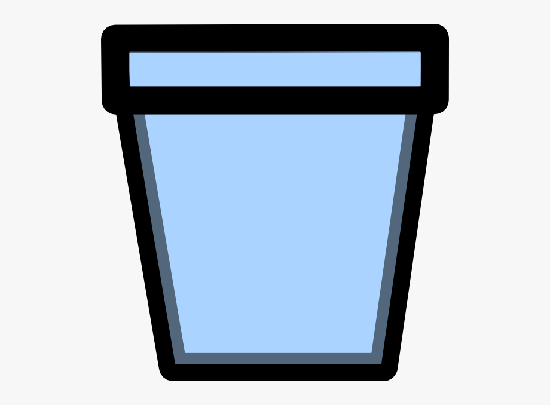

<app-header [nazad]="1"></app-header>

<div class="main">
  <hr />

  <div class="wrapper" style="float: left">
    <h2 *ngIf="rasadnik" style="text-align: center;">{{rasadnik.naziv}}</h2>

    <div *ngIf="!rasadnik" class="spinner-border text-secondary" role="status" style="display: inline-block"></div>

    <table *ngIf="rasadnik" style="display: inline-block;">
      <tr>
        <td>Kolicina vode:</td>
        <td>{{rasadnik.voda}} litara</td>
        <td>
          <button class="btn btn-secondary" (click)="uvecajKolicinuVode(+1)" [disabled]="pritisnutoDugmeVoda">+</button>
        </td>
        <td>
          <button class="btn btn-secondary" (click)="uvecajKolicinuVode(-1)" [disabled]="pritisnutoDugmeVoda">-</button>
        </td>
      </tr>
      <tr>
        <td>Temperatura:</td>
        <td>{{rasadnik.temperatura}} °C</td>
        <td>
          <button class="btn btn-secondary" (click)="uvecajTemperaturu(+1)"
            [disabled]="pritisnutoDugmeTemperatura">+</button>
        </td>
        <td>
          <button class="btn btn-secondary" (click)="uvecajTemperaturu(-1)"
            [disabled]="pritisnutoDugmeTemperatura">-</button>
        </td>
      </tr>
    </table>

    <span style="color: red;" style="display: inline-block;">{{poruka}}</span>
    <hr />

    <div *ngIf="!ucitaneSadnice" class="spinner-border text-secondary" role="status" style="display: inline-block;"></div>

    <table *ngIf="ucitaneSadnice" border="1" style="display: inline-block;">
      <tr *ngFor="let nizSadnica of sadnice; let index1 = index;">
        <td *ngFor="let sadnica of nizSadnica; let index2 = index;" placement="bottom" triggers="click"
          autoClose="outside" [ngbPopover]="popoverBody" [popoverTitle]="popoverTitle"
          (click)="prikaziSadnicu(index1, index2)">
          
          
        </td>
      </tr>
    </table>

    <ng-template #popoverBody>
      <app-sadnica-detalji [rasadnik]="rasadnik" [x]="x" [y]="y" [sadnica]="sadnice[x][y]"></app-sadnica-detalji>
    </ng-template>

    <ng-template #popoverTitle>
      {{sadnice[x][y] ? sadnice[x][y].naziv : "Prazno polje"}}
    </ng-template>
  </div>

  <div class="magacin" style="display: inline-block;">
    <app-magacin></app-magacin>
  </div>

</div>

<app-odrzavanje></app-odrzavanje>

<app-footer></app-footer>
